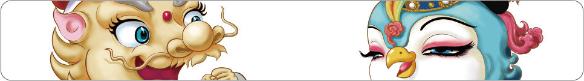
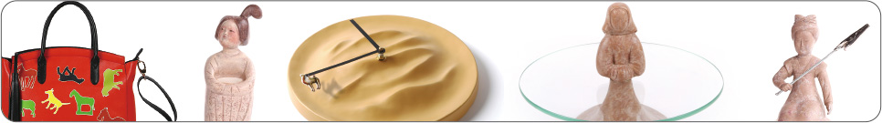
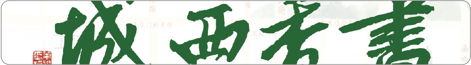
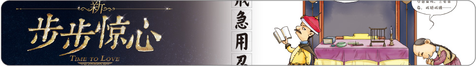

我们认为的所谓文化创意，是以文化内涵为根基，创意思维为载体，这样予以表现的文创产品才有灵魂，才有意义，纯粹的文化附加或者简单的创意思维都是苍白的。凝一人不会因循守旧，不会哗众取宠，我们所追求的，是优秀传统文化与流行元素的唯美结合，是以现代的时尚理念再现传统美学的精髓。
（一）吉祥物相关文创产品
吉祥物是人类文明的产物，寄托了人们对吉祥平安和幸福生活的追求与向往。承载着民族文化、民族精神的吉祥物形象，传播便捷、深入人心，是传播文化的最好媒介。
2014年初，【凝一】获得授权为故宫博物院设计开发其吉祥物形象。自接手项目开始，公司组织精英建立专门的策划与设计团队，深入地对故宫博物院的文化内涵进行调研、讨论与定位，前后一共设计了十余种不同的形象，经过与院内专家多次沟通，最终确定以“龙皇帝壮壮”和“凤皇后美美”为主体形象。2014年11月在厦门举办的世界博物馆博览会上，故宫博物院建院90年来的首款吉祥物闪耀亮相，受到了社会各界的广泛关注和普遍好评。
（二）博物馆系列文创产品
博物馆是以征集、典藏、陈列和研究自然文化与社会文化为主要任务的实体，针对其具有的科学性、历史性或者艺术性进行分类，并为公众提供知识、教育和欣赏的场所。【凝一人】都十分热爱祖国文化，为博物馆服务是我们梦寐以求的一件事。
自成立以来，我们先后与故宫博物院、北京艺术博物馆、北京古代建筑博物馆、北京宣南文化博物馆等多家博物馆建立了合作伙伴关系，并为她们量身定制了一系列的文化创意产品。产品从规制较高的瓷器、真丝制品、真皮制品等到民众生活中喜闻乐见的小物件一应俱全，如景德镇定烧的陶瓷、杭州定制的丝巾、铅笔、手机壳、文化衫、钥匙扣、笔记本等，几乎囊括了文创市场产品的各个种类。
（三）图书馆系列文创产品
图书馆是搜集、整理、收藏图书资料以供人阅览、参考的机构，是知识的海洋。藉由文创让更多的人愿意走进图书馆，让更多的人喜欢上读书，这是十分有意义的一件事情。
【凝一】已经和北京西城区第一图书馆建立了合作伙伴关系，并为其特色阅览室研发了一系列文创产品，取得了很好的反响。
（四）电影定制开发文创产品
电影是融视觉和听觉等现代艺术于一体的综合表现形式，也是最为大众所接受的文化传播载体。【凝一】期望能通过自己的努力让人们在观影之余还可有一些更直观的途径来理解电影所传播的文化内涵。
2015年5月上旬，【凝一】公司与华视影视投资（北京）有限公司形成合作伙伴关系，并为其出品的电影《新步步惊心》开发设计制作文化创意产品“戒急用忍”系列。
